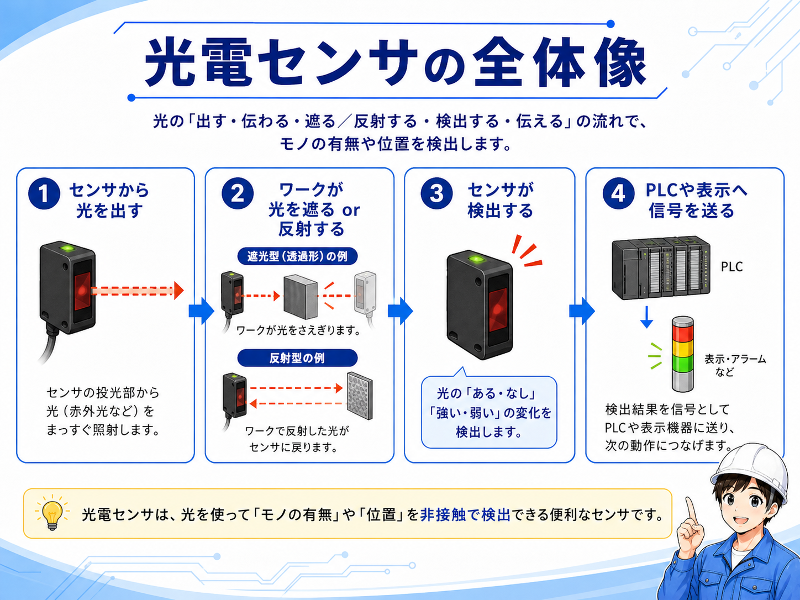
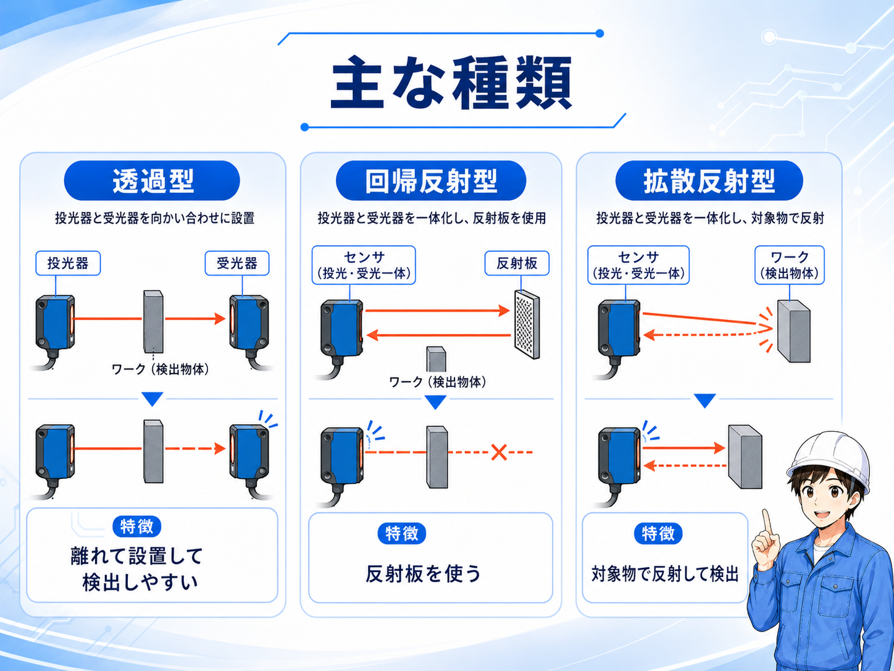
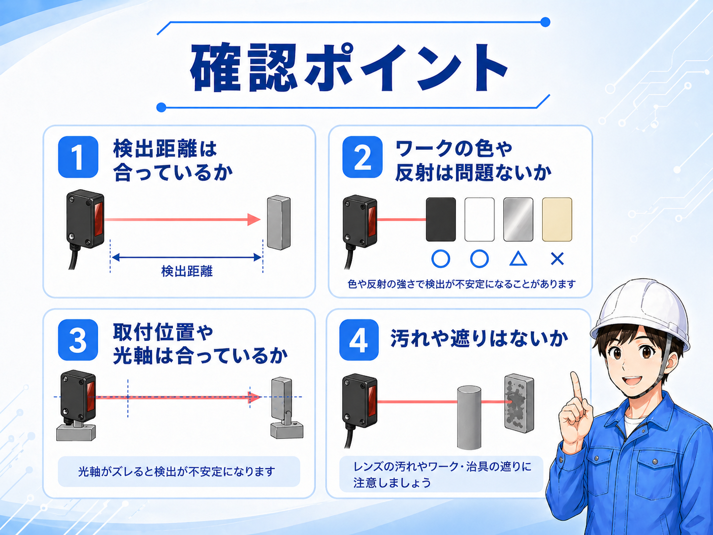

この記事が向いている人
- 光電センサの基本的な役割を知りたい人
- 透過型・回帰反射型・拡散反射型の違いを整理したい人
- 検出しない時や誤検出する時の見方を知りたい人
光電センサは、光を出して、その光が遮られたか、反射して戻ってきたかを見て、ワークの有無や位置を検出するセンサです。
制御盤や機械装置では、ワークの通過確認、位置確認、部品の有無確認、箱や製品の検出などでよく使われます。
近接センサは金属検出が得意ですが、光電センサは光を使うため、金属以外のワークも検出しやすい場面があります。ただし、ワークの色、表面の反射、汚れ、光軸ズレの影響を受けることがあります。


先輩光電センサは、まず「光がどう通るか」を見ると分かりやすいです。遮るのか、反射して戻るのかで種類が変わります。

新人近接センサみたいに対象物だけを見るんじゃなくて、光の通り道まで見る必要があるんですね。
光電センサで見るポイントは、投光・受光・検出物の関係です。
投光部から出た光を、受光部が受け取ります。その途中にワークが入って光が遮られたり、ワークで反射した光が戻ってきたりすると、センサが状態の変化として検出します。
PLCで見る場合は、光電センサの出力が入力信号として入ります。つまり、センサ本体の検出状態と、PLC入力がONしているかを分けて確認すると、トラブル時に追いやすくなります。
検出しない時は、センサ本体だけでなく、投光方向、受光方向、ワークの位置、光軸、汚れや遮りを順番に確認すると原因を見つけやすくなります。
| 見る場所 | 内容 | 現場での確認 |
|---|---|---|
| 投光 | センサから光を出す側 | 光が正しい方向へ出ているか |
| 受光 | 光を受け取る側 | 光軸が合っているか、受光できているか |
| ワーク | 検出したい対象物 | 色、材質、反射、形状が検出に影響していないか |
| PLC入力 | センサ出力が入る先 | センサ検出時にPLC入力がONしているか |
光電センサは、大きく分けると透過型・回帰反射型・拡散反射型があります。
どれが正解というより、検出距離、取り付けスペース、ワークの色や反射、周囲の環境に合わせて選びます。

投光器と受光器を向かい合わせて設置します。検出距離を取りやすく、ワークが光を遮ることで検出します。
センサ本体と反射板を使います。反射板から戻る光が遮られることでワークを検出します。
対象物に当たって戻る光を使います。設置はしやすいですが、ワークの色や反射の影響を受けやすい場合があります。
粉じん、油、透明体、光沢物、黒いワークなどでは検出が不安定になることがあります。
光電センサと近接センサは、どちらもワークを検出するために使いますが、得意な条件が違います。
近接センサは金属ワークの検出に向いています。一方で光電センサは、光を使うため、金属以外のワークや少し離れた位置の検出に使いやすい場面があります。
| 項目 | 光電センサ | 近接センサ |
|---|---|---|
| 検出方法 | 光の遮りや反射を見る | 金属の接近を検出する |
| 得意な対象 | 箱、ワーク、通過物、非金属など | 金属部品、金属板、金属治具など |
| 注意点 | 汚れ、反射、色、光軸ズレ | 検出距離、金属材質、取り付け位置 |
| 使いどころ | 離れた位置や通過検出に使いやすい | 金属の有無確認に使いやすい |

拡散反射型では、ワークの色や表面の反射で検出が不安定になることがあります。現場では実物に近い条件で確認するのが安心です。
光電センサがうまく検出しない時は、センサ本体の故障だけでなく、検出距離、ワークの色や反射、取り付け位置、汚れを順番に確認します。
特に、以前は動いていたのに急に不安定になった場合は、レンズ汚れ、位置ズレ、治具やワークの変更が原因になっていることがあります。

センサの検出範囲から外れていないか、ワークとの距離が遠すぎないか確認します。
黒いワーク、透明体、光沢物では検出が不安定になることがあります。
投光方向と受光方向がズレていないか、振動で位置が変わっていないか確認します。
レンズ汚れ、油、粉じん、治具の影などで光が遮られていないか確認します。

一般的な光電センサは、ワーク検出や位置確認に使う部品です。人の侵入検知や安全停止に関わる用途では、安全機器や安全回路として適した構成を別に考える必要があります。